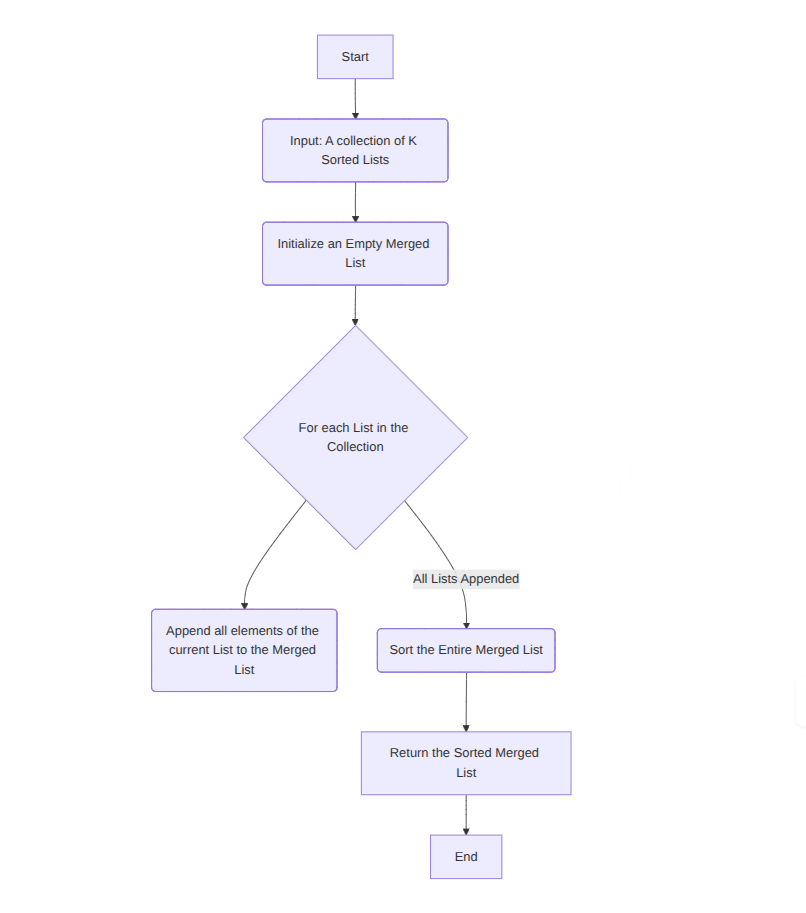
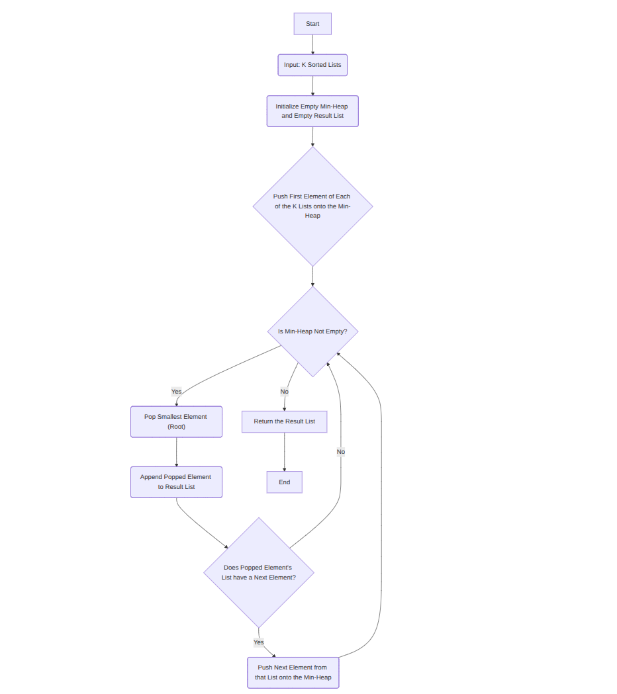
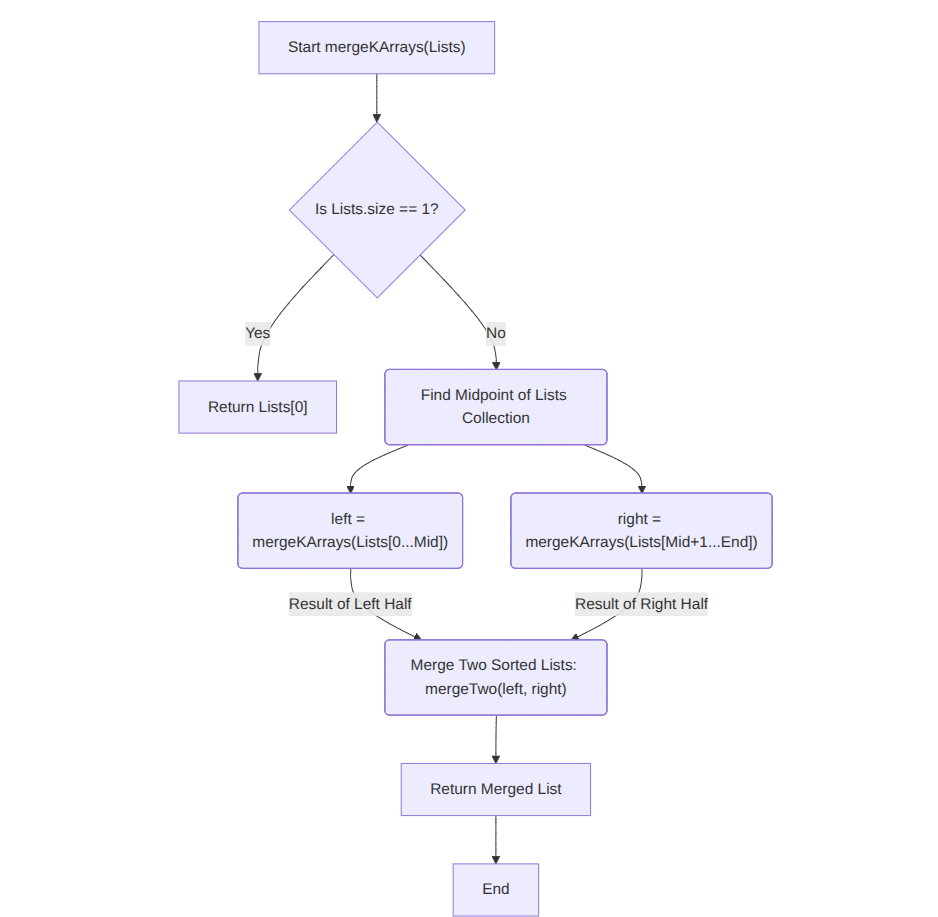

Merge K Sorted Arrays / Lists
Problem Statement
Given K sorted arrays (or linked lists), merge them into one sorted
array (or list).
Example: Input: [[1,4,5],[1,3,4],[2,6]] → Output:
[1,1,2,3,4,4,5,6]
Approach 1: Brute Force
Explanation: Concatenate all arrays and sort them.
Time Complexity: O(N log N), N = total number of
elements
Space Complexity: O(N)
merged = []
for arr in arrays:
merged.extend(arr)
sort(merged)
return merged

Approach 2: Min Heap (Optimal)
Explanation: Use a min-heap to always pick the
smallest element from heads of arrays.
Time Complexity: O(N log K)
Space Complexity: O(K)
create min-heap
for each array:
push first element with array index and element index
while heap not empty:
pop smallest element
add to result
if next element exists in same array:
push next element
return result

Approach 3: Divide & Conquer
Explanation: Merge arrays pairwise recursively.
Time Complexity: O(N log K)
Space Complexity: O(1) extra (if merged in place)
function mergeKArrays(arrays):
if arrays.size == 1:
return arrays[0]
mid = arrays.size // 2
left = mergeKArrays(arrays[0..mid])
right = mergeKArrays(arrays[mid+1..end])
return mergeTwo(left, right)
